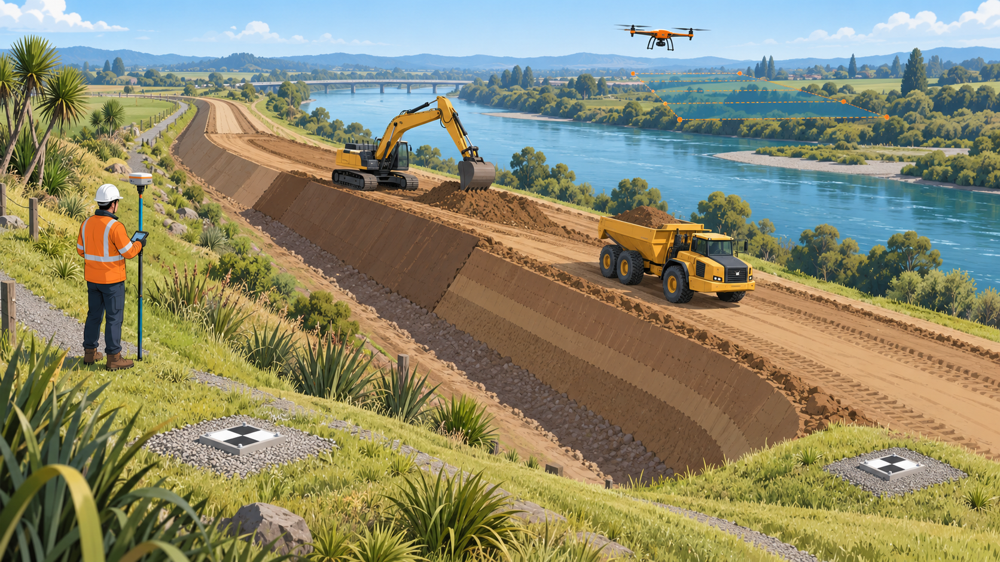

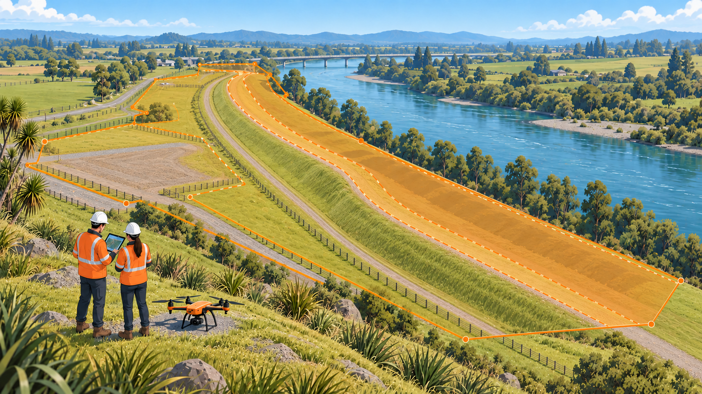
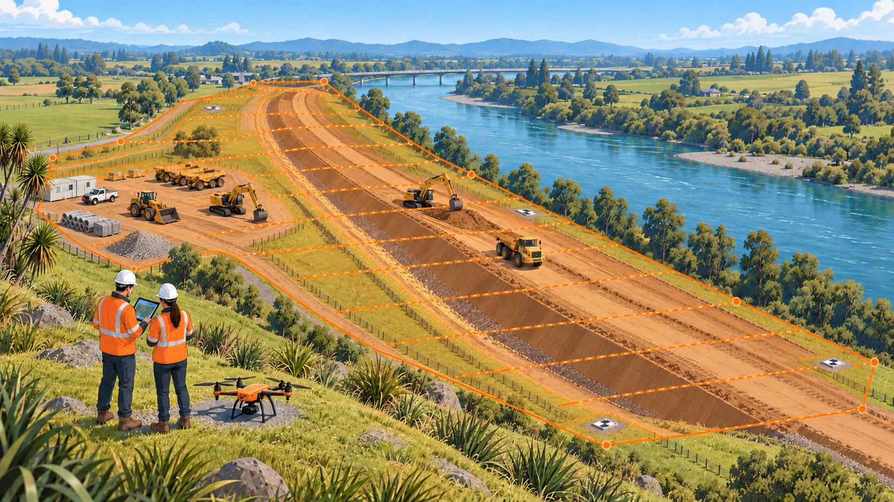
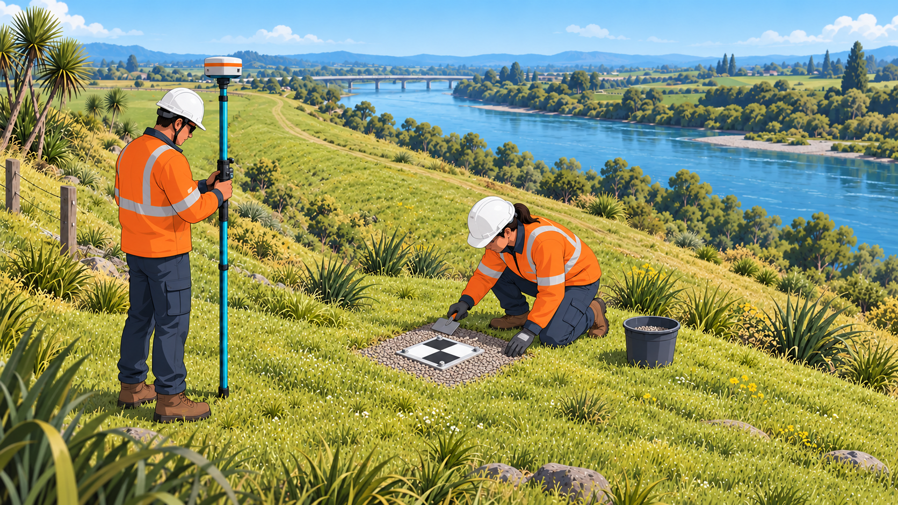
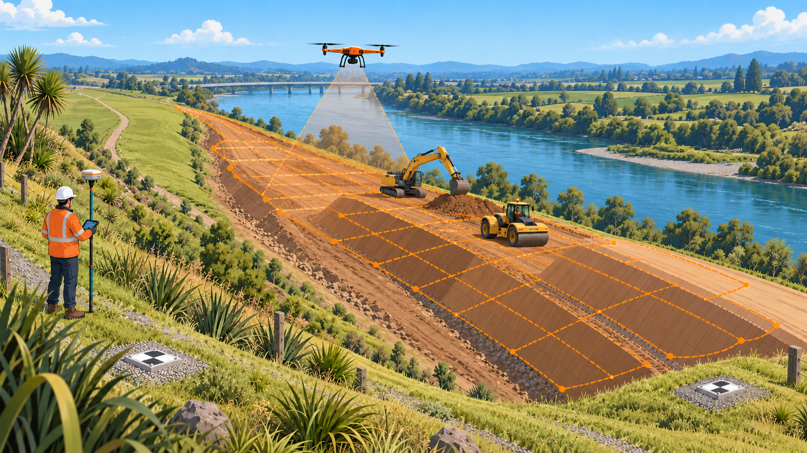
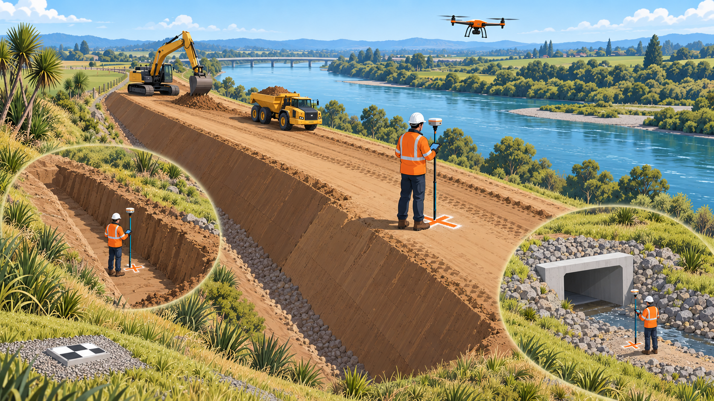
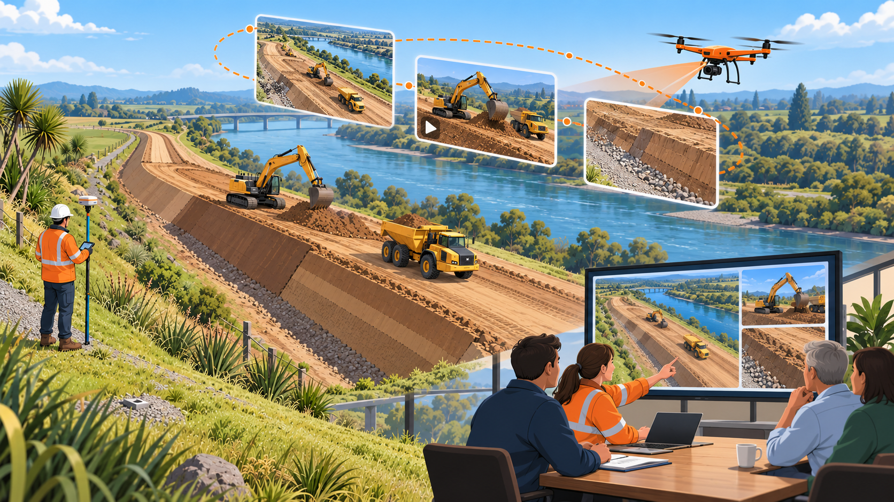
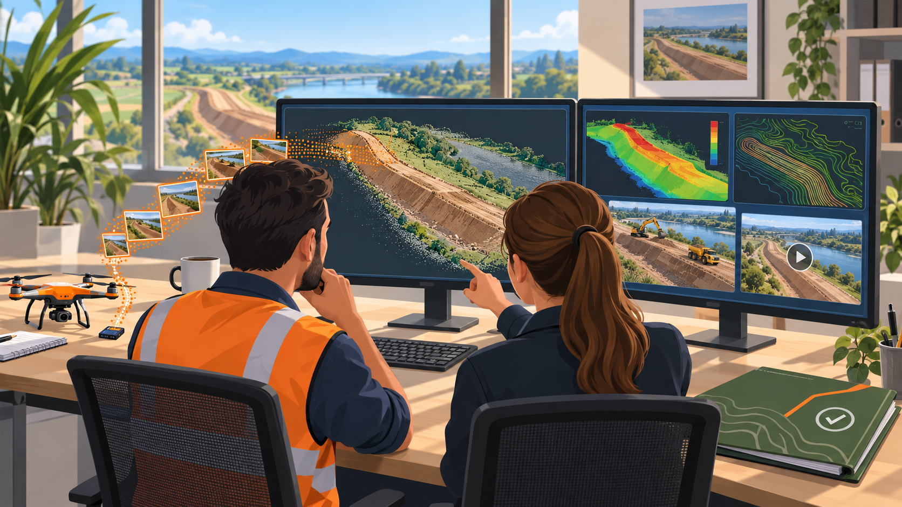
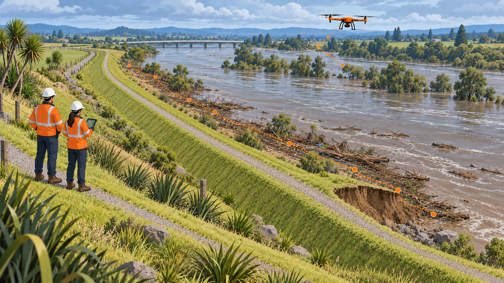
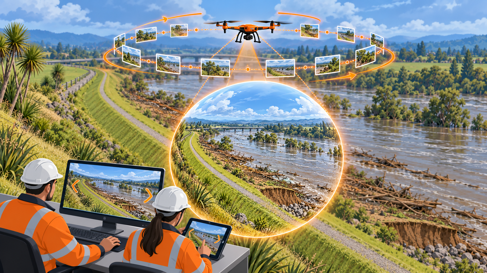
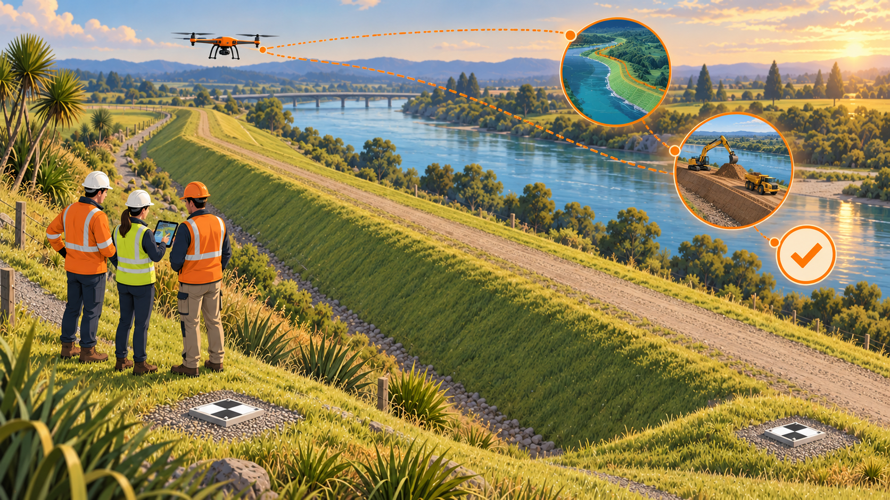
BOPRC engineering drone surveys
The purpose
Why we use drones
0:00 / 3:13
Illustrated overview
Why we use drones
A clear overview of the stopbank survey lifecycle—from planning and permanent control to repeat flights, useful site media, independent checks and defensible engineering evidence.